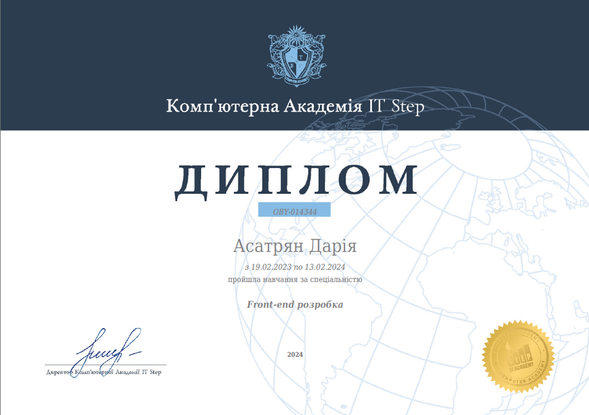
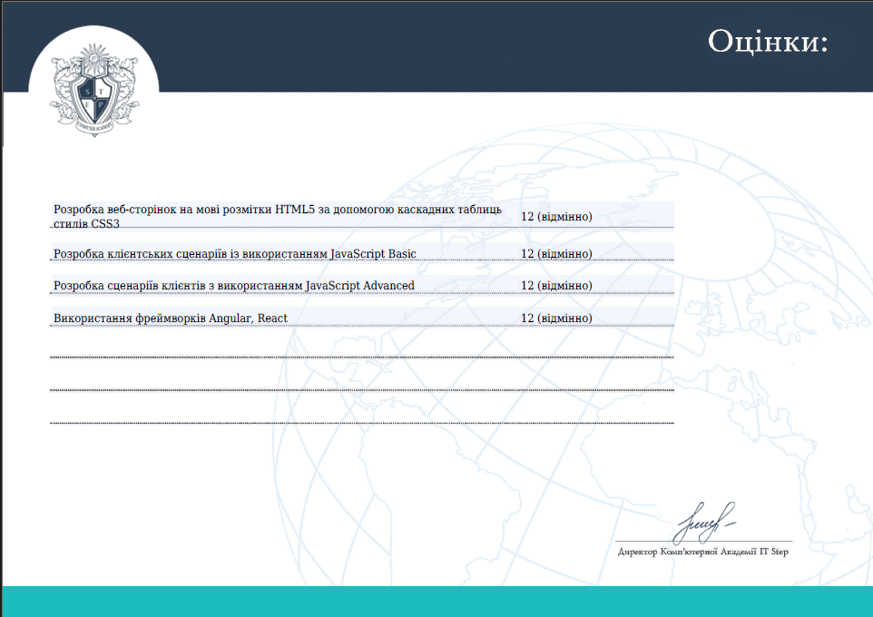
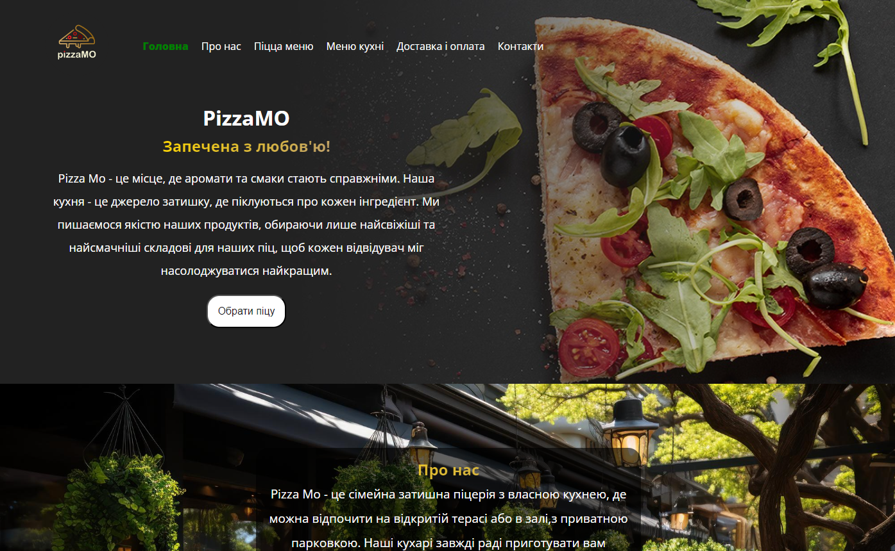
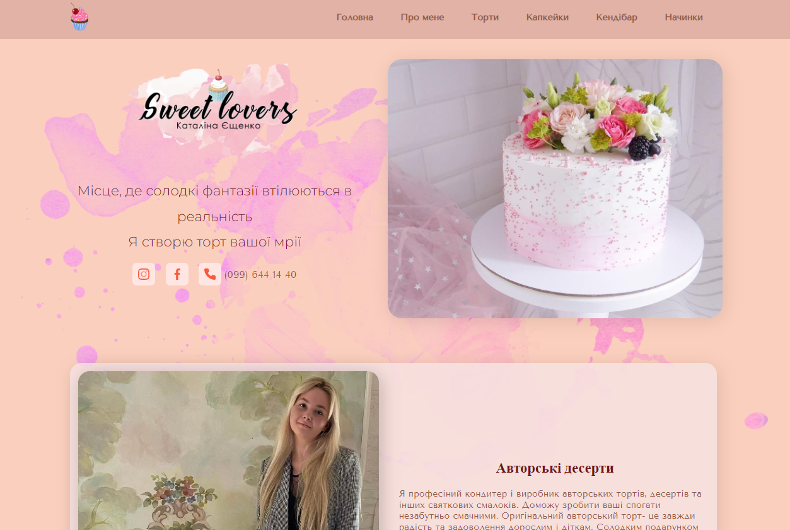
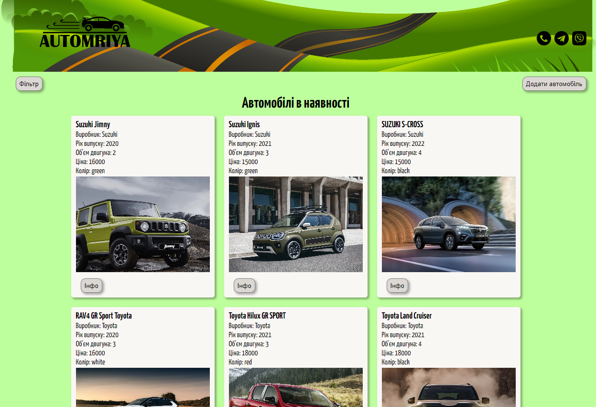
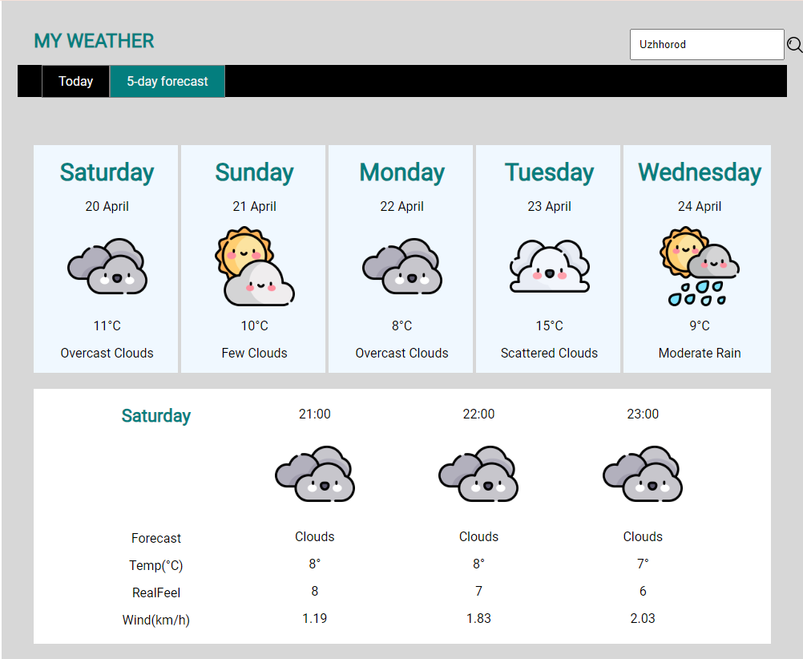
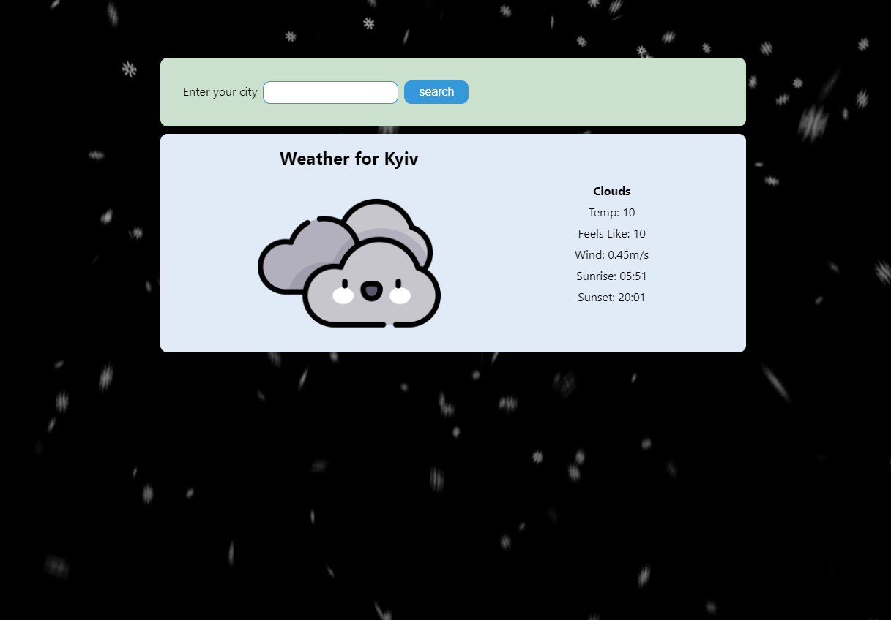

KoricaDev
Я Дарина, молодий дипломований фронтенд розробник, створюю сайти з нуля, дотримуюсь поставлених завдань, побажань замовника. Готова працювати самостійно з проектом, завданням, чи стати частиною команди. Важливими своїми плюсами вважаю відповідальність, уважність до деталей, самодисципліну, здатність швидко освоювати нове, комунікабельність, легко знаходжу спільну мову.
1.Освіта
- 2022р Проходження марафону HTML/CSS в школі "GoIT"
- 2022-2023 Навчання на курсі "Програміст-фрілансер" від IT-Banda
-
2023-2024р Проходження навчання в Комп'ютерній Академії IT STEP на курсі Front-end розробки з отриманням диплому
 -
Освоєні технології:
- HTML/CSS
- JavaScript (ES6)
- React
- TypeScript
- Node.js
- Git/GitHub
- jQuery
- Angular
2.Проєкти
Сайт-меню для піцерії
Розроблений з використанням JavaScript (ES6) сайт-меню для ознайомлення клієнтів з переліком страв, можливістю обрати зручний спосіб замовлення і вичерпною інформацією про саму піцерію.
Сайт-візитівка для майстра авторських десертів
Сайт-галерея для можливості переглянути всі варіанти оформлень, обрати начинки і зв'язатися з майстринею.
Модель для сайту автобазару
Розроблений за допомогою фреймворку React, з можливістю фільтрації авто за різними властивостями, додавати своє авто, редагувати його чи видаляти.
Повноцінний сервіс прогнозу погоди
Розроблений сайт з використанням JavaScript (ES6), налаштована робота з API одного із популярних синоптичних сервісів по отриманню прогнозу погодинно, і на 5днів вперед.
Віджет для отримання поточної погоди
Модель, розробленого на React, працюючого з API сервісу по отриманню інформації щодо погоди в обраному користувачем місті.
